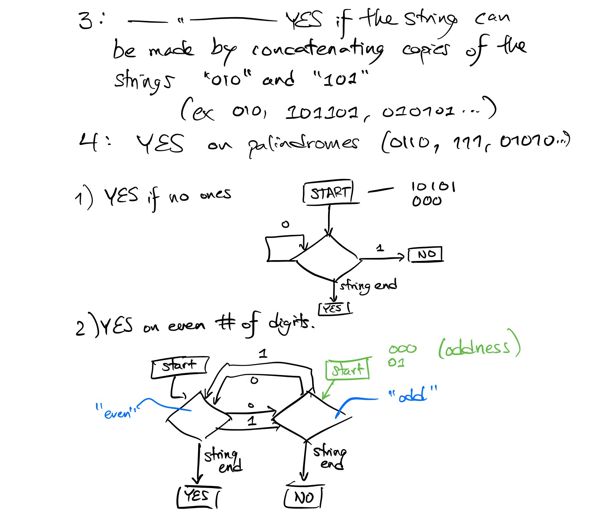
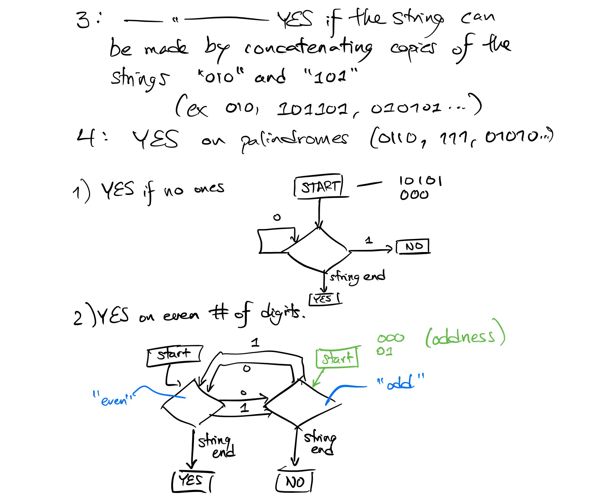
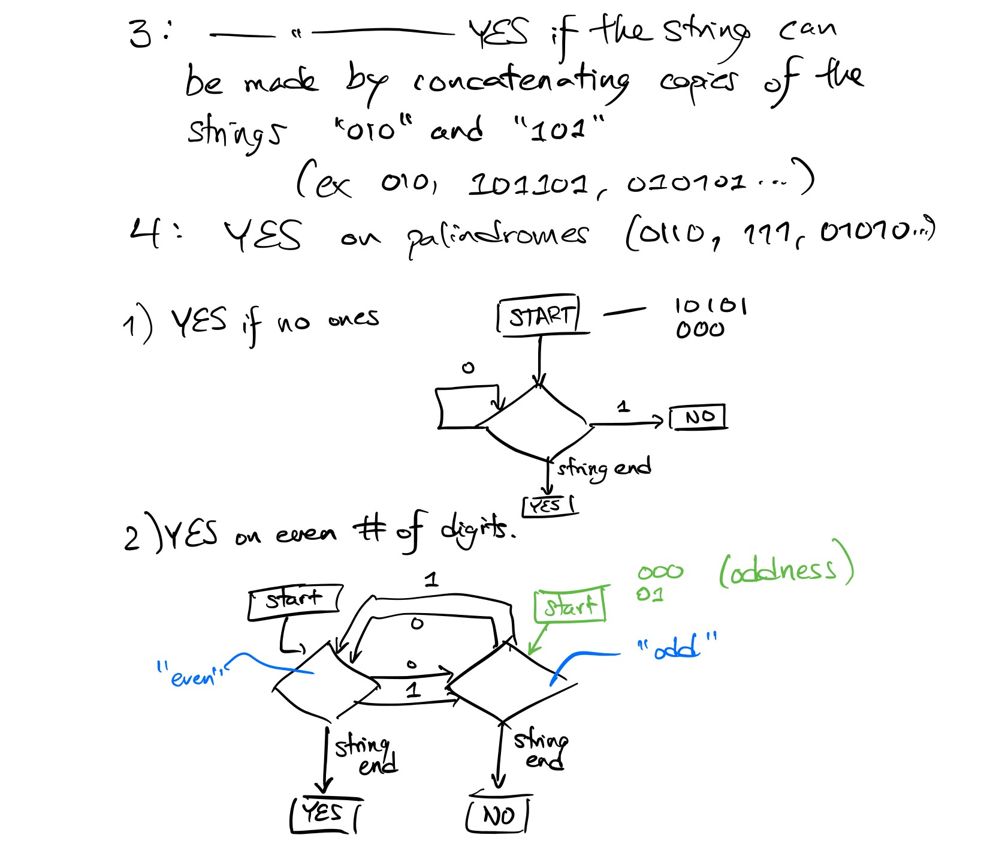
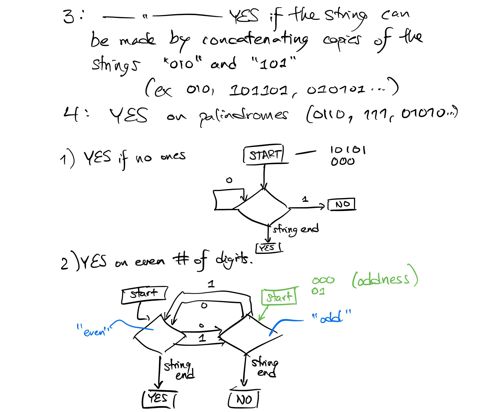

Left is an example of an in-class puzzle: a concept-first activity that introduces deterministic finite automata during the first lecture.
DFAs can feel a bit alien, but flow charts are familiar. Flow charts that transition on 0's and 1's aren't much worse, and they do more or less exactly what DFAs can do.
Given the components to the left, can you build a flowchart that accepts the language described?
Collaboration with peers and clarification from me provides context and support in class. At this point, students' designs vary (and may make assumptions different from a DFA model.)
For example, if a student's flowchart requires the operator to remember certain information, this leads naturally to the questions, "what sort of memory can we assume the operator has?", and, "how might more complex memory models give our flowcharts more decisive power?"
When approaching Homework 1, students may be learning a variety of new skills at the same time. Links in the header, along with TA-compiled resource and assistance discussion posts, help to ease the transition.
I design my problem sets to include what I think of as my "three R's": rationale, references, and rubric.
Rationale: Each problem is footnoted with the reason why I think it's worth the students' time. I think this is owed to the students in my class, and including it forces me to think critically about the work I ask my students to do.
References: I don't want my students to waste time stuck on a problem. The resources linked won't give them the answer, but they will go over critical concepts and equip students with the concepts needed to explore and engage with the material.
Rubric: Clear grading standards are a must for equity and transparency.